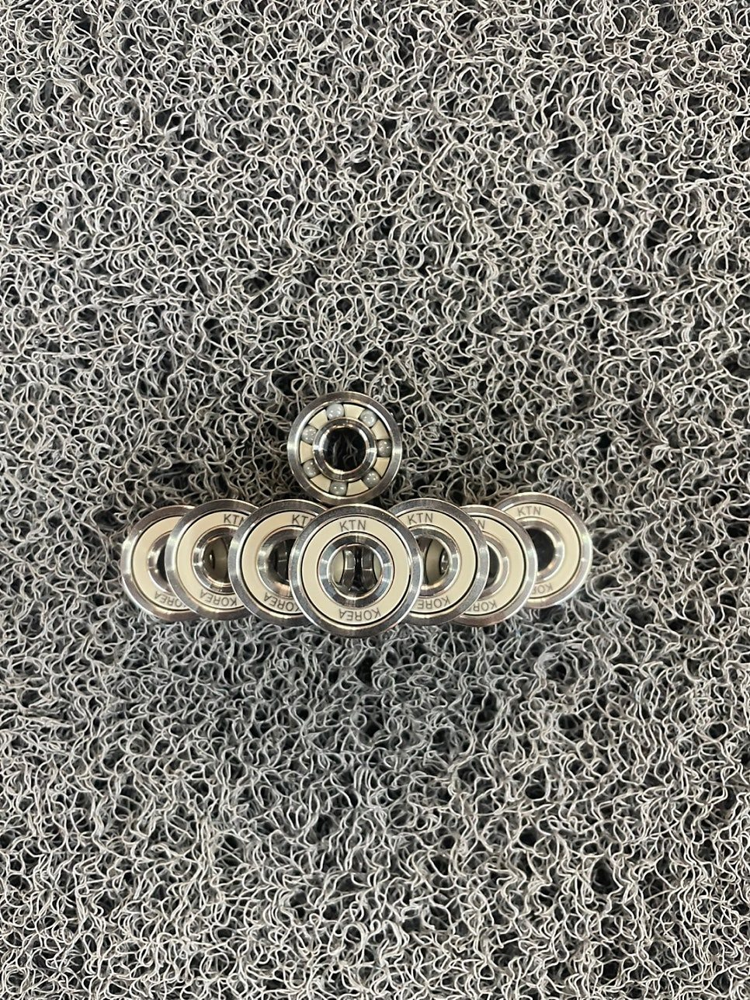
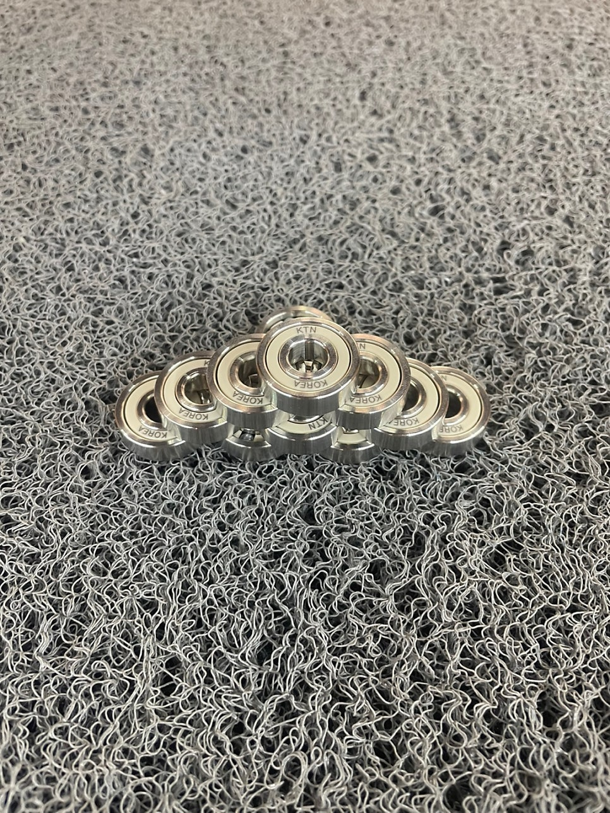

"힘은 더 드는데 속도는 안 나고…" 이 증상, 베어링 문제입니다
롤러스케이트를 타다 보면 어느 순간 이상한 느낌이 옵니다. 분명 힘은 예전만큼 주는데, 속도가 붙지 않는 것입니다.
대부분 이럴 때 휠을 의심하거나 프레임을 살펴봅니다. 그런데 정작 가장 큰 원인은 눈에 잘 띄지 않는 곳에 있습니다. 바로 베어링입니다.
이 증상 중 하나라도 해당된다면, 베어링은 이미 마모되었거나 내부가 오염된 상태일 가능성이 높습니다. 특히 야외 트랙처럼 먼지·모래·물기가 있는 환경에서는 베어링 내부 윤활제가 3개월 만에 손실되기도 합니다.
선택 기준 1. "ABEC가 높으면 좋은 베어링?" — 이 오해가 돈을 낭비하게 만듭니다
베어링을 고를 때 가장 많이 보는 숫자가 ABEC 등급입니다. ABEC 5, ABEC 7, ABEC 9… 숫자가 높을수록 좋다고 생각하기 쉽습니다.
하지만 ABEC는 치수 정밀도(공차) 기준일 뿐입니다. 내구성·재질·윤활제 지속력과는 전혀 무관합니다.
"ABEC 7을 샀는데 왜 안 굴러가지?"
이 불만의 99%는 볼 재질과 윤활제 문제입니다.
ABEC 7이어도 볼이 금속이고 씰이 허술하면,
세라믹 볼을 쓴 ABEC 5보다 실주행 성능이 떨어집니다.
등급 숫자보다 볼 재질과 씰 방식을 먼저 확인하세요.
선택 기준 2. 금속 vs 세라믹 — 수치로 비교합니다
말로 설명하는 것보다 숫자가 정직합니다. KTN이 자체 측정한 금속 베어링과 하이브리드 세라믹 베어링의 실제 비교 데이터입니다.
| 항목 | 일반 금속 베어링 | KTN 하이브리드 세라믹 |
|---|---|---|
| 회전 마찰 | 높음 | 극도로 낮음 |
| 내구 수명 | 3~6개월 | 12~24개월 이상 |
| 방수 · 방진 | 취약 | 고내구성 씰 장착 |
| 고속 회전 시 | 진동 · 소음 발생 | 정숙하고 부드럽게 회전 |
| 유지보수 | 자주 필요 | 거의 불필요 |
| 무게 | 상대적으로 무거움 | 경량 |
세라믹 볼은 금속 볼보다 마찰 계수가 낮고, 열팽창이 적으며, 부식에 강합니다. 같은 힘으로 밀었을 때 더 오래, 더 빠르게 굴러가는 이유가 여기에 있습니다.
선택 기준 3. 산업용 기술이 스포츠에 적용될 때 — KTN이 다른 이유
시중에는 세라믹 베어링을 표방하는 제품이 많습니다. 그런데 대부분은 스포츠용으로 새로 만든 회사이거나, OEM으로 중국산 볼을 조립해 판매하는 구조입니다.
KTN은 다릅니다. 20년간 반도체·화학·의료기기 산업에 납품해 온 정밀 베어링 제조사입니다. ±0.001mm 공차를 맞춰야 하는 산업 현장에서 쌓인 기술이 롤러스케이트 전용 세라믹 베어링에 그대로 녹아있습니다.


솔직히 말씀드리겠습니다.
저희 제품이 모든 분께 맞는 건 아닙니다.
가끔 타는 분, 가격이 최우선인 분이라면
일반 금속 베어링이 더 합리적인 선택일 수 있습니다.
KTN 세라믹 베어링은
동호회·대회를 준비하거나, 매번 정비하는 번거로움 없이 오래 타고 싶은 분을 위해 만들었습니다.
그런 분이라면, 교체 한 번으로 12~24개월이 달라집니다.